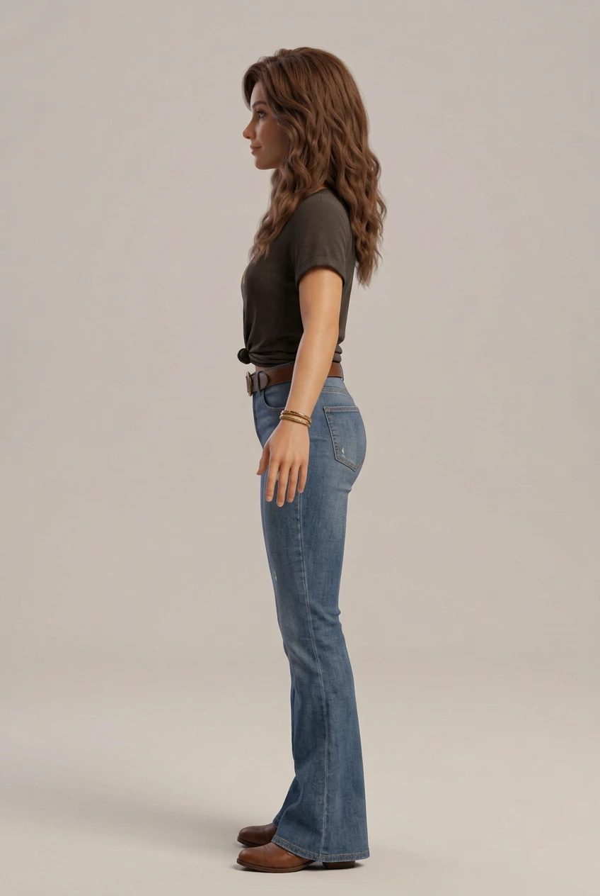
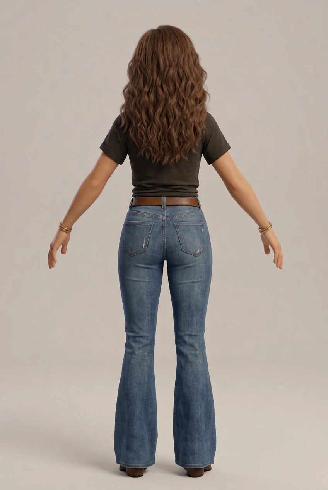
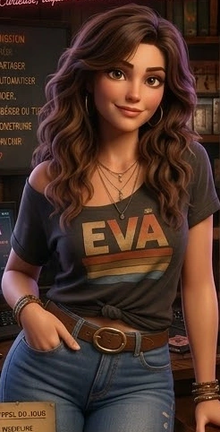

02 / OBJET ÉDITORIAL
Le dossier en perspective
Une surface plane pivote lentement. Ombre et tranche renforcent le relief : ce n’est pas une rotation 360° du personnage.
Version R&D — le site est en cours de développement.
Association loi 1901
Mouvement Représentatif de la Société Civile
La force citoyenne
ATELIER VISUEL / PROTOTYPE 01
Une scène 2D. Une profondeur simulée. Une direction chaleureuse, entre cuivre patiné et rose néon.
Une page d’essai indépendante : aucun changement de style n’est appliqué au reste du site. Le portrait est extrait de votre référence, sans redessiner les logos officiels.
REPRISE / PRIORITÉ AU RÉALISME
Le précédent personnage procédural a été rejeté : son apparence était trop rudimentaire. Il est conservé dans une archive repliée, pas présenté comme une solution acceptable.
Ces trois nouvelles images de travail reprennent la référence fournie dans une direction plus réaliste : visage adulte, cheveux châtains ondulés, t-shirt EVA et jean évasé. Ce sont des images générées, pas des rendus d’un modèle 3D existant.
Les vues ont été générées séparément : pose des bras, volume des cheveux, plis et accessoires peuvent différer. Elles ne constituent pas un triplet orthographique calibré et ne doivent pas être envoyées comme vues parfaitement alignées d’un même modèle. Aucun agrandissement artificiel n’a été effectué.
Un lanceur expérimental est préparé pour Windows 11 et une RTX 2070 Super 8 Go, avec TripoSR et extraction de surface sur CPU. Il vise une première reconstruction texturée à examiner, sans squelette ni animation à ce stade. Il n’a pas encore été exécuté sur le PC cible et aucun nouveau GLB réaliste n’a été généré ici.
Procédure locale, prérequis, licences et limites. Le lancement doit être effectué volontairement sur la machine équipée du GPU ; aucun accès distant n’est installé. Le lecteur ne remplace pas cette étape par une image collée sur un volume.

Les vues ont été générées séparément : pose des bras, volume des cheveux, plis et accessoires peuvent différer. Elles ne constituent pas un triplet orthographique calibré et ne doivent pas être envoyées comme vues parfaitement alignées d’un même modèle. Aucun agrandissement artificiel n’a été effectué.
Un lanceur expérimental est préparé pour Windows 11 et une RTX 2070 Super 8 Go, avec TripoSR et extraction de surface sur CPU. Il vise une première reconstruction texturée à examiner, sans squelette ni animation à ce stade. Il n’a pas encore été exécuté sur le PC cible et aucun nouveau GLB réaliste n’a été généré ici.
Procédure locale, prérequis, licences et limites. Le lancement doit être effectué volontairement sur la machine équipée du GPU ; aucun accès distant n’est installé. Le lecteur ne remplace pas cette étape par une image collée sur un volume.

Les vues ont été générées séparément : pose des bras, volume des cheveux, plis et accessoires peuvent différer. Elles ne constituent pas un triplet orthographique calibré et ne doivent pas être envoyées comme vues parfaitement alignées d’un même modèle. Aucun agrandissement artificiel n’a été effectué.
Un lanceur expérimental est préparé pour Windows 11 et une RTX 2070 Super 8 Go, avec TripoSR et extraction de surface sur CPU. Il vise une première reconstruction texturée à examiner, sans squelette ni animation à ce stade. Il n’a pas encore été exécuté sur le PC cible et aucun nouveau GLB réaliste n’a été généré ici.
Procédure locale, prérequis, licences et limites. Le lancement doit être effectué volontairement sur la machine équipée du GPU ; aucun accès distant n’est installé. Le lecteur ne remplace pas cette étape par une image collée sur un volume.
ARCHIVE / GLB ARTICULÉ · NON RETENU
Un personnage original stylisé : coiffure châtain ondulée, t-shirt anthracite, jean évasé, ceinture, chaussures et accessoires cuivre. Géométries, textures et mouvements sont créés pour cette étude — aucun avatar téléchargé n’est présenté comme EVA.
Prototype rejeté par l’utilisateur pour son apparence trop rudimentaire et trop éloignée d’EVA. La construction procédurale reste visible, notamment au visage, aux mains et aux articulations. Les cheveux suivent la tête sans simulation de mèches. Pas de parole ni d’expressions faciales animées.
GLB autonome, environ 3,2 Mo. Chargement uniquement à votre demande ; pose immobile au départ.
Clips intégrés : respiration discrète, salut de la main et marche sur place. Animation facultative, pause à la sortie du cadre et préférence système de mouvement réduit respectée. Les curseurs restent utilisables au clavier et sur écran tactile.
Télécharger le GLB articulé · Contenu, provenance et limites du modèle
NOUVELLE ÉTUDE / VRAIE 3D WEBGL
Un bureau, une lampe en cuivre, un carnet et une tasse : des objets modélisés, éclairés et vus sous plusieurs angles. Ce décor est distinct du personnage articulé présenté plus haut.
Moteur chargé uniquement à votre demande. Aucune lecture automatique.
Les curseurs fonctionnent au clavier et sur écran tactile. Mouvement réduit : exploration manuelle uniquement. La géométrie est rendue à la densité de l’écran jusqu’à 2× ; au-delà, la définition est volontairement plafonnée pour limiter la charge GPU.
Le personnage GLB présenté plus haut possède un squelette, des textures et trois clips. Son style reste une étude procédurale : la fidélité du visage, la coiffure et les déformations doivent être validées avant de parler de personnage de production.
Moteur : Three.js 0.160.1, hébergé localement. Licence MIT · Provenance technique.
Scène immobile. Lancez les animations pour tester.
01 / PORTRAIT EN PLANS
Décor, portrait et lumière se décalent à des vitesses différentes : c’est la parallaxe. Une petite rotation de l’ensemble renforce le relief.
Survolez la scène ou utilisez ce curseur, disponible aussi au clavier et sur écran tactile.

02 / OBJET ÉDITORIAL
Une surface plane pivote lentement. Ombre et tranche renforcent le relief : ce n’est pas une rotation 360° du personnage.
03 / LUMIÈRE & MATIÈRE
Une lumière glisse sur le lettrage, sans clignotement. Aucun flash, aucun son, aucun défilement forcé.
DIRECTION CHROMATIQUE
Profondeur discrète ou marquée ? Rythme lent ou scène immobile ? Rose ponctuel ou cuivre dominant ? Aucun choix n’est enregistré ni envoyé.
Les trois études initiales ci-dessus utilisent des plans HTML/CSS. La nouvelle scène WebGL utilise de vrais volumes, et le nouveau GLB apporte un premier personnage articulé. Le portrait reste une image plane : EVA ne parle pas, ne marche pas et ne change pas d’expression. Le personnage GLB dispose de mouvements de squelette distincts de ce portrait ; leur naturel reste à évaluer.
Le portrait est un recadrage de 246 × 482 pixels de votre image fournie, sans suréchantillonnage. Sa netteté reste limitée au zoom et sur écran haute densité ; ce n’est pas un master de production. Textes, dossier et éclairages CSS restent indépendants de cette résolution.
Lecture arrêtée au départ, pause quand l’onglet est masqué, mode immobile et préférence système de réduction des mouvements respectés. Ces précautions ne valent pas conformité RGAA/WCAG.
Revenir au projet ÉVA